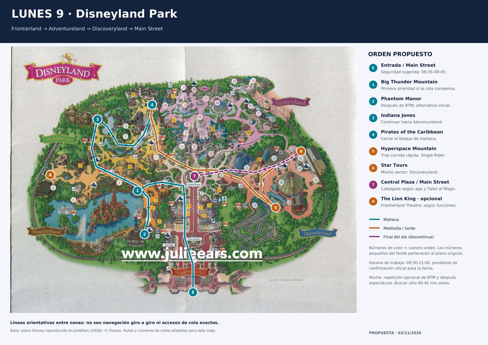
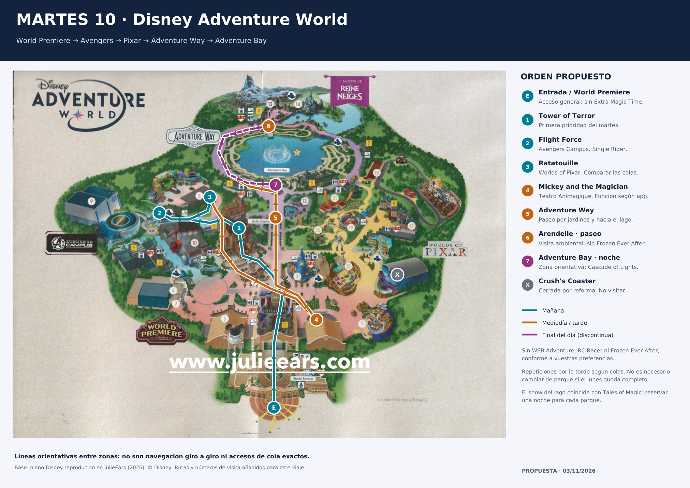

Lunes: aprovechar la ventana seca
BTM primero si funciona; Indiana cuando permita la lluvia. Con lluvia fuerte, Discoveryland primero, Pirates y Phantom como refugios. Ajustar el circuito al tiempo real.
Ver lunesGuía complementaria · 3 noviembre 2026
3 adultos · lunes 9 en Disneyland Park y martes 10 en Disney Adventure World. Sensaciones, ambientación, Navidad y buenos espectáculos; circuito flexible con plan de lluvia.
Referencia secundaria: Tales 21:00 y Cascade 20:50. Las sesiones exactas del 9–10 siguen pendientes de confirmación oficial; esta guía termina cada noche en un parque y no intenta ver ambos shows.
BTM primero si funciona; Indiana cuando permita la lluvia. Con lluvia fuerte, Discoveryland primero, Pirates y Phantom como refugios. Ajustar el circuito al tiempo real.
Ver lunesTower → Flight Force → Ratatouille. Después Mickey, TOGETHER, paseo navideño y repeticiones. No gastar la primera hora en Arendelle.
Ver martesIntroduce la espera que ves ahora. Comparación con vuestros criterios; no consulta colas en directo.
La cita es vuestra hora de llegada al show, no su inicio. Usamos 25 min de margen para experiencia y salida; es una estimación y no incluye traslados largos.
Se guarda solo en este navegador si el almacenamiento está disponible; no sincroniza entre móviles.
Entradas completas, app, batería externa, impermeable, calzado probado para agua y calcetines secos. Llevar abrigo nocturno; no dejarlo en consigna si lo necesitaréis antes de salir. Desayunar antes de los controles.
RER A hacia Marne-la-Vallée–Chessy; comprobar el panel de paradas. Referencia 12–15 min de tren desde Torcy, más espera, paseo y seguridad. Confirmar tren de vuelta para cada fecha.
Transporte · Consignas · Tiempo actualizadoPrioridades: BTM, Hyperspace, Indiana, Pirates, Phantom y Star Tours. Una cabalgata navideña y Tales completan el día. Bloques orientativos con margen; no son citas ni garantía de hacerlo todo.
Llegar antes si se usa consigna. Seguridad y acceso general. Consultar BTM, Indiana, Hyperspace y programa de funciones. Desayunar antes de entrar.
Si BTM está operativa y el tiempo permite exteriores, comenzar por Frontierland. Si está cerrada o hay lluvia fuerte, activar ruta de lluvia por Discoveryland.
Objetivo: hacer una primera vuelta. Hasta 40 min, buena oportunidad; entre 40–60, valorar aceptar una sola cola larga para asegurar una prioridad.
Más de 60 min o avería: Phantom Manor si está a 25 min o menos, y nueva consulta al salir. Si sigue imposible, continuar el circuito; no esperar parado a una reapertura.
Indiana si está abierta y la lluvia resulta soportable. Después Pirates. Al estar por Adventureland se evita cruzar de lado a lado.
Si el bloque no cabe, hacer la prioridad disponible y dejar la otra para 14:00–16:00. Lluvia fuerte: Pirates primero; Indiana queda pendiente de una ventana seca.
Reservar 35–45 min de planificación. Elegir en la app un local abierto en el sector; no caminar media hora por un restaurante concreto.
Si solo hay colas largas de comida, tomar algo breve y desplazar la comida principal a después de las 14:00. No hay reserva en Captain Jack’s.
Comparar normal y Single Rider en Hyperspace; después Star Tours. Si la segunda tiene mucha cola, no insistir por cumplir el horario.
Este bloque puede intercambiarse con toda la mañana en caso de lluvia intensa. Mantener los dos sectores completos reduce caminatas.
Elegir una: Lion King si encaja una función; o Let’s Sing Christmas! si estáis en Discoveryland. El resto del bloque permite BTM/Indiana pendientes y castillo/dragón si están abiertos.
Con mucha lluvia elegir teatro y pausa caliente. No encadenar tres funciones si quedan atracciones prioritarias sin hacer.
La referencia secundaria publica cabalgata 17:45 (también 15:55). Buscar sitio 25–35 min antes si la app mantiene esa función. Elegir un lado desde el que luego podáis salir sin atravesar la cabalgata.
Si 17:45 cambia o se cancela, conservar pausa/ambientación y recuperar atracciones. El árbol encendido y Main Street siguen mereciendo el paseo; horario del encendido por consultar.
Repetir BTM solo con margen. Para estimar: cola publicada + 15–20 min de margen para embarcar, montar y salir; no es duración oficial.
Si compromete cena o colocación del show, omitir repetición. Si BTM no se hizo, puede merecer cambiar una parte de Navidad por ella, de forma consciente.
Cenar antes de buscar ubicación. Un local abierto en Main Street o Discoveryland puede encajar según dónde terminéis.
No recoger una mochila en una consigna lejana justo antes del show. Abrigo, batería y protección de lluvia con vosotros.
Referencia secundaria: 21:00; hora oficial del 9 pendiente. Colocarse 45–60 min antes. Duración aproximada oficial 22 min.
Con cancelación confirmada: consultar atracciones aún abiertas y servicio de vuelta. No asumir que se pueda reentrar al parque después de su cierre.
Entrada → Hyperspace → Star Tours → comida o función en Discoveryland → Pirates → Phantom. Insertar BTM e Indiana cuando estén abiertas y mejore el tiempo. Puede haber algún retroceso; proteger una ventana seca importa más que un circuito perfecto.
Si BTM sigue parada, preguntar al personal y reevaluar con margen antes del show. No esperar delante de un acceso cerrado ni suponer una reapertura.
Tower, Flight Force y Ratatouille primero. Añadir teatro y el lago, sin Frozen Ever After. Si se termina pronto, repetir lo que más os guste con cola favorable.
Seguridad y acceso general; comprobar Tower, Flight Force, Ratatouille y funciones. El paseo hasta el fondo del parque puede esperar.
No gastar la primera hora en Arendelle: Frozen Ever After está descartada.
Hasta 30 min, entrar. Entre 30–45, puede compensar asegurar una prioridad. Si marca más o está parada, Flight Force primero.
Consultar Tower al terminar Flight Force. No dar por hecho que una apertura de las 09:30 empieza con cola vacía.
Usar Single Rider solo si mejora la espera. Si Ratatouille tiene una cola alta, moverla a última tarde y preservar tiempo para los teatros.
No repetir Flight Force ahora si no se han hecho las otras prioridades. Si el orden real se invierte por Tower, continuar por el sector más cercano.
Stark Factory si está abierto y encaja con la zona; consultar carta y horario en app. Si ya estáis en Rémy, elegir local abierto cercano.
Chez Rémy y PYM no están reservados: una comida de mesa/buffet puede ocupar 75–90 min de planificación y sustituir una función.
Objetivo una función de Mickey and the Magician y, si encaja, TOGETHER. Referencias secundarias útiles: Mickey 14:05; TOGETHER 15:40. Son opciones a confirmar, no compromisos.
Llegar 25–35 min antes; con lluvia puede llenarse antes. Si no entráis, tomar la siguiente función sin hacer cola indefinida. Elegir solo uno si faltan atracciones.
Paseo por jardines y lago durante una ventana seca. Ambientación navideña de Arendelle sin entrar en Frozen Ever After.
Si llueve fuerte, cambiar por TOGETHER, repetir interior cercano o una pausa caliente. El paseo no obliga a dar una vuelta completa al lago.
Tower, Flight Force o Ratatouille según pendientes. Solo considerar otro parque si ya se completaron las prioridades aquí y hay un objetivo concreto.
Para cruce reservar 45–60 min solo para salir, caminar y volver a entrar, más cola y atracción. Preferencia de esta guía: permanecer en Adventure World.
Después empezar el paseo al lago. Última revisión de hora y posible adaptación/cancelación por viento.
No esperar a las 20:00 para pedir comida si queréis buena ubicación en el lago.
Referencia secundaria: 20:50, NO 21:00 como en la hipótesis antigua; pendiente de app para el 10. Duración oficial aproximada 16 min.
No intentar ver también Tales. Si el horario real cambia, desplazar cena y colocación; la hora de cierre del parque no demuestra la hora del show.
Elegir una repetición de vuestra favorita, TOGETHER si aún no se hizo y tiene función, o un paseo por Arendelle con luz y después iluminada. Si no os interesa el teatro, dedicar ese bloque a Tower/Flight Force. Evitar cambiar de parque sin una prioridad concreta pendiente.
Esquemas nuevos para orientarse por zonas y orden de visita, con enlaces de Google por etapas. Los planos anteriores se conservan debajo; sirven de base más detallada.
Esquema propio de disposición aproximada y sin escala. Las líneas indican el orden entre zonas, no caminos ni entradas de cola. Toca los puntos para localizarlos.
Google puede desconocer senderos y entradas internos. Si propone rodeos, salir del parque o pasos cerrados, seguir app oficial y señalización.
Esquema propio de disposición aproximada y sin escala. Las líneas indican el orden entre zonas, no caminos ni entradas de cola. Toca los puntos para localizarlos.
Google puede desconocer senderos y entradas internos. Si propone rodeos, salir del parque o pasos cerrados, seguir app oficial y señalización.


Los planos anteriores conservan atribución © Disney / JulieEars. El folleto PDF retirado no se reincorpora. Para senderos y accesos reales, utilizar el mapa de la app oficial y los carteles.
Consulta meteorológica del 3/11 para Chessy, Seine-et-Marne: lunes con lluvia/llovizna por la mañana y unos 10–11 °C; martes con mejoría y unos 9–13 °C. Tendencia, no horario de lluvia garantizado: revisar 24–48 h antes y al salir.
Son lunes y martes, pero ya es Navidad y el 11 es festivo francés. No asumir parque vacío. Las colas históricas aconsejan proteger apertura y tarde; una media no predice vuestra espera y Extra Magic Time no está incluido en vuestras reservas.
| Atracción | Buena oportunidad | Primera vuelta: valorar hasta | Exposición |
|---|---|---|---|
| Big Thunder Mountain | ≤ 40 min | 60 min | Exterior |
| Phantom Manor | ≤ 25 min | 35 min | Interior |
| Indiana Jones and the Temple of Peril | ≤ 25 min | 40 min | Exterior |
| Pirates of the Caribbean | ≤ 25 min | 40 min | Interior |
| Star Wars Hyperspace Mountain | ≤ 30 min | 45 min | Mayormente interior |
| Star Tours: The Adventures Continue | ≤ 20 min | 30 min | Interior |
| The Twilight Zone Tower of Terror | ≤ 30 min | 45 min | Interior |
| Avengers Assemble: Flight Force | ≤ 25 min | 40 min | Interior |
| Ratatouille: The Adventure | ≤ 25 min | 40 min | Interior |
Para repetir, usar el umbral corto. BTM puede justificar una primera cola de 40–60 min: no posponerla todo el día esperando 20 min.
Montaña rusa minera: prioridad alta y candidata a repetir de noche. La lluvia intensa o el viento pueden interrumpirla.
Phantom Manor si sigue abierta; volver a mirar BTM al salir.
No dejar la primera vuelta para el último tramo de la noche.
Recorrido oscuro de mansión encantada, sin buscar sensaciones de montaña rusa. Buen refugio; parte del acceso puede quedar al aire libre.
Pirates si está abierta y compensa el desplazamiento por Adventureland.
Hacerla después de BTM si queda cerca y tiene poca cola.
Montaña rusa corta con inversión. Prioridad para una ventana seca, sin reservarle una hora si ya hay cola larga.
Pirates; volver a Indiana con una mejora real.
Consultar el acceso Single Rider operativo; no asumir que siempre está abierto.
Paseo en barca de ambientación pirata, con pequeñas bajadas. Es una experiencia para adultos también; se conserva del HTML.
Indiana si hay ventana seca y cola baja.
Interior de la atracción; acceso y trayecto hasta ella no totalmente cubiertos.
Montaña rusa lanzada con inversiones. Una de las prioridades de sensaciones; comparar normal y Single Rider.
Star Tours, sin cambiar de zona.
Con normal corta suele compensar montar juntos; Single Rider no asegura ahorro.
Simulador de Star Wars; buen complemento junto a Hyperspace. Puede marear más que otras experiencias.
Hyperspace o función disponible de Let’s Sing Christmas! en Videopolis.
No cruzar todo el parque solo para repetirla.
Torre de caídas con ambientación y secuencias de ascensor. Primera prioridad del martes.
Flight Force y reevaluar Tower antes de comer o al final de la tarde.
Una cola de apertura ya larga puede ser acumulación de Extra Magic Time.
Montaña rusa lanzada con inversiones. Hacer una vuelta y reservar repeticiones para una cola favorable.
Ratatouille o TOGETHER según hora y cercanía.
Single Rider documentado; confirmar funcionamiento y espera en el acceso.
Aventura inmersiva de Rémy, sin sensaciones de montaña rusa. Mantenerla por ambientación y variedad, aunque sea familiar.
Flight Force o teatro; no quedarse bloqueados al mediodía.
Comparar Single Rider. Si la normal es corta, mantener el grupo.
Frontierland: Phantom y Lion King si hay función; BTM en una mejora. Adventureland: Pirates. Discoveryland: Hyperspace y Star Tours, Videopolis según programa. Adventure World: Tower, Flight Force, Ratatouille y teatros.
Interior no significa que la cola o el traslado sean cubiertos. Liberty y Discovery Arcade ayudan a cruzar parte de Main Street. Adventure Way, lago y Arendelle son paseos expuestos: hacerlos con mejora del tiempo. Disney puede suspender atracciones o efectos por lluvia intensa/viento.
Priorizar una cabalgata al anochecer y un nocturno por día. Lion King, Mickey and the Magician y TOGETHER se eligen por producción musical y pausa cubierta, no como relleno infantil. Let’s Sing Christmas! es opcional si interesa y encaja en Discoveryland.
Referencia secundaria: cabalgata el 9 a las 15:55 o 17:45; Let’s Sing Christmas! los días 9–10 a las 14:35, 15:35 y 18:10. Mickey 14:05 y TOGETHER 15:40 son candidatos del martes, siempre sujetos a app. No fijamos hora de encendido del árbol sin programa verificable.
Llegar 25–35 min antes al teatro; la lluvia puede aumentar la demanda y no hay garantía de acceso. Si no entráis, elegir otra sesión o atracción interior. Si se cancela el nocturno, consultar atracciones aún abiertas y el regreso; no presuponer reapertura de accesos.
Objetivo comida rápida 11:40–12:20 y cena antes de 19:30. Estimar 35–45 min, ampliándolo con colas. Elegir un local abierto y cercano en la app: Café Hyperion en Discoveryland y Stark Factory en Avengers son referencias, no reservas ni apertura garantizada.
Captain Jack’s, Chez Rémy y PYM pueden ser experiencias de comida, pero requieren más margen: estimar 75–90 min y sustituir una función/repetición. No consta reserva. No dar por abiertos los puestos navideños concretos citados en el HTML.
Por preferencia del HTML: Frozen Ever After, Spider-Man W.E.B. Adventure y RC Racer. Por reforma oficial: Crush’s Coaster. No programamos Dumbo, carruseles, tazas, Slinky, Cars Quatre Roues ni colas de princesas o personajes.
Pirates y Ratatouille se conservan por ambientación e interés ya recogido en el HTML. El resto de cierres del 9–10 no está completamente verificado: revisar app y listado de acceso cada mañana. Aparecer en un plano no demuestra que esté abierto.
Revisión 3/11/2026. Esta guía complementa y conserva la anterior. Base general 09:30–21:00 según captura y calendarios contrastados; la captura no muestra fecha. Las horas de función son referencias secundarias pendientes de app. Márgenes, prioridades y umbrales son decisiones de planificación, no garantías ni instrucciones oficiales.
Oficial: puede haber restricciones por lluvia intensa y viento.
Oficial: temporada 7/11–6/1; ambientación también en Arendelle.
Oficial: Lion King, Mickey and the Magician y TOGETHER; confirmar sesiones.
Oficial: unos 22 min; sesión concreta del 9 pendiente de app.
Oficial: unos 16 min; horarios y cambios en app.
Oficial: reforma desde septiembre 2026 hasta verano 2027.
Fichas oficiales: servicios, restricciones y descripción.
Single Rider documentado; funcionamiento concreto por comprobar.
Single Rider documentado; no garantiza ahorro.
Comida rápida, pizza, pasta y ensalada. Carta y apertura en app.
Secundaria consultada 3/11; horas de referencia, no sesiones oficiales verificadas para el viaje.
Histórico: la apertura general ya puede tener cola; mediodía suele empeorar. No es previsión para el 9.
Histórico: mejor oportunidad al principio o al final frente a la franja central; Extra Magic no incluido en vuestro acceso.
Nivel +1 oeste; tarifas y horario publicado.
Referencia en el parque para funciones, colas y accesos.
Pronóstico consultado con el servicio meteorológico para Chessy (77), 9–10/11; actualizar en Tiempo del viaje. No se han trasladado las medias históricas de cola como previsión del día.
Volver a la guía anterior